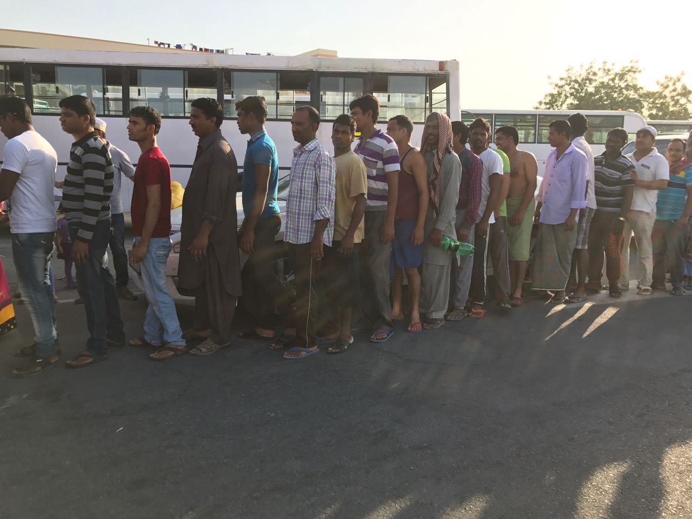
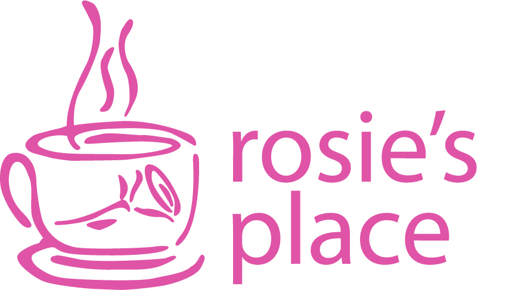

Grassroot Stories
This section will feature local initiatives to reach out and build bridges in the communities we live in. We also hope to partner with local organizations that further peaceful relationship building within and between communities. Tell us your story
Dubai Iftaar Drive
In June 2017 (Shehrullah 1438H), a group of Dawoodi Bohras in Dubai conducted an iftaar drive for less-privileged, Muslimeen and peoples of various faiths, in one of the many labor camps situated on the outskirts of the city. 450 packets were served, each consisting of biryani, fruit, dates, samosa and juice. It was a very humbling experience for all of the organizers as the world view of a prosperous, wealthy and affluent Dubai did not fit with the poverty they saw. One of the organizers described feeling an immense sense of personal satisfaction, gratitude and fulfillment. He especially expressed gratitude for Syedna Fakhruddin's guidance and directive to engage in such activities and has plans of further local engagement in the near future.Boston Women's Homeless Shelter
In the spirit of helping our fellow human beings and building bridges among communities, Zahra Hasanat has initiated regular meal service events at Rosies Place, a homeless shelter for women in Boston, Massachusetts. To date, we have funded 5 dinners and organized the volunteers for each event. We have partnered with a local Church, Masjid, and Synagogue, including student groups and have worked together with these communities to improve the lives of poor and homeless women.